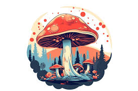
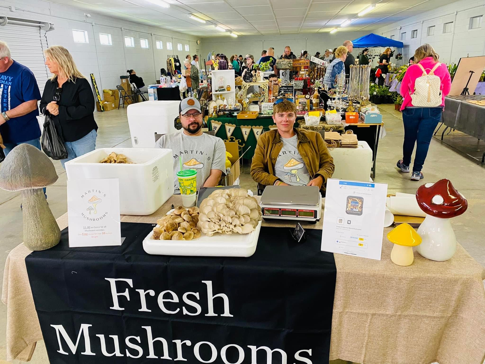

Fresh. Organic. From Our Farm to Your Table.
Welcome to Martins Mushrooms, your go-to source for fresh, organic mushrooms. We are a family-run business with deep roots in sustainable farming, driven by a passion for growing the highest quality, farm-fresh food for our community.
Our journey began several years ago on our family farm, where we cultivated a deep respect for the land and the food it provides. We believe that good food starts with good practices, which is why we are committed to using sustainable, organic methods in every aspect of our farming. From the rich, fertile soil we tend to the care and attention we give to each crop, our focus is on delivering mushrooms that are not only delicious but also good for the planet.
At Martins Mushrooms, we take pride in being more than just mushroom growers; we are stewards of the land, dedicated to preserving its health for future generations. Our family works together to ensure that every mushroom we produce meets the highest standards of quality, from our farm to your table.
When you choose Martins Mushrooms, you're not just getting a product; you're supporting a family that is passionate about what we do. We invite you to join us on our journey, enjoying the fresh, flavorful mushrooms that are grown with love and care.
Delicious and nutritious shiitake mushrooms, perfect for a variety of dishes.
Fresh oyster mushrooms with a delicate texture and mild flavor.
Large, meaty portobello mushrooms ideal for grilling and stuffing.